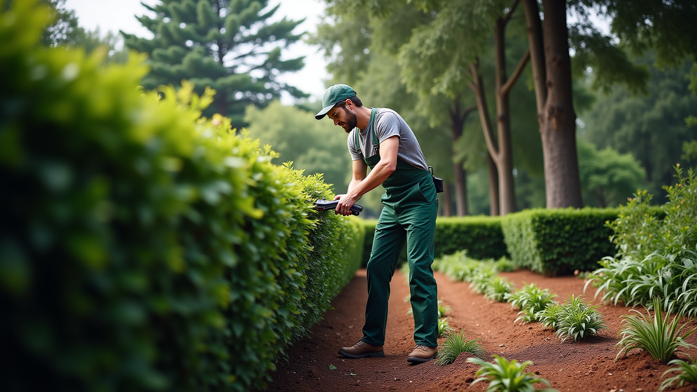
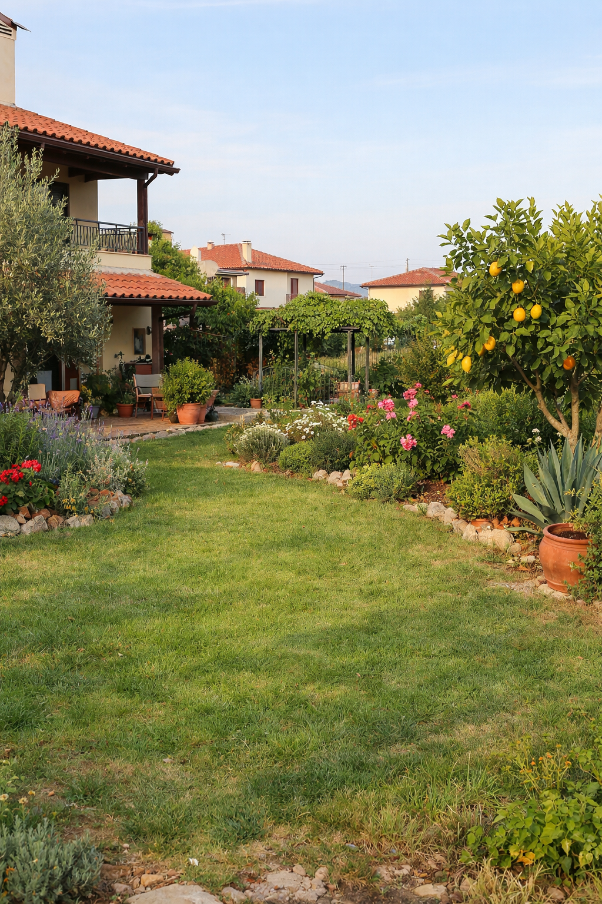
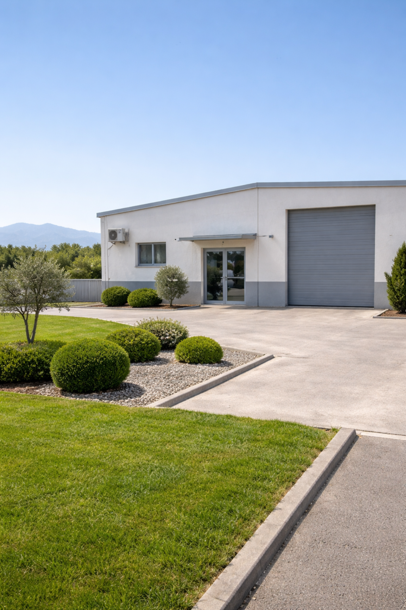

Καθαρό αποτέλεσμα
Δουλεύουμε με προσοχή στη λεπτομέρεια ώστε ο χώρος να δείχνει άμεσα πιο τακτοποιημένος και ζωντανός.
Φροντίδα κήπου στη Θεσσαλονίκη
Η Verdon αναλαμβάνει συντήρηση κήπου, περιποίηση φυτών, καθαρισμό και ανανέωση εξωτερικών χώρων για κατοικίες και μικρές επιχειρήσεις που θέλουν σταθερά καθαρό και προσεγμένο αποτέλεσμα.

Συνεργασία με σιγουριά
Γιατί μας επιλέγουν
Δεν εστιάζουμε μόνο στις εργασίες. Εστιάζουμε στο να νιώθετε ότι ο χώρος σας βρίσκεται σε καλά χέρια.
Δουλεύουμε με προσοχή στη λεπτομέρεια ώστε ο χώρος να δείχνει άμεσα πιο τακτοποιημένος και ζωντανός.
Προγραμματίζουμε με σαφήνεια τις εργασίες και τηρούμε όσα συμφωνούνται, χωρίς ασάφεια και καθυστερήσεις.
Κινούμαστε διακριτικά, αφήνουμε τον χώρο περιποιημένο και επιλέγουμε παρεμβάσεις που ταιριάζουν στο περιβάλλον σας.
Υπηρεσίες
Από τη συστηματική συντήρηση έως τη φύτευση και την ανανέωση, η Verdon αναλαμβάνει εργασίες που κρατούν τον χώρο λειτουργικό, καθαρό και αισθητικά ισορροπημένο.
Αναλαμβάνουμε το άδειασμα κατοικιών και την απομάκρυνση μπαζών με συνέπεια και οργάνωση, αφήνοντας τον χώρο καθαρό και έτοιμο για την επόμενη χρήση του.
Επιλέγουμε και τοποθετούμε τα κατάλληλα φυτά και γκαζόν με βάση το έδαφος και το περιβάλλον, για υγιή ανάπτυξη και φυσική ισορροπία.
Διατηρούμε τον κήπο σας καθαρό και υγιή όλο τον χρόνο, με σταθερή φροντίδα που εξασφαλίζει καλαίσθητο αποτέλεσμα χωρίς υπερβολές.
Επαγγελματικά κλαδέματα και κοπές που ενισχύουν την υγεία και τη σωστή ανάπτυξη των δέντρων, διασφαλίζοντας παράλληλα την ασφάλεια του χώρου.
Απομακρύνουμε χόρτα, κλαδιά και απορρίμματα, δημιουργώντας έναν καθαρό, ασφαλή και λειτουργικό εξωτερικό χώρο.
Προτείνουμε πρακτικές λύσεις για τη σωστή διαμόρφωση του χώρου σας, συνδυάζοντας λειτουργικότητα, αισθητική και βιωσιμότητα.
Γιατί Verdon
Γνωρίζουμε τις ανάγκες που έχει ένας αστικός ή ημιαστικός εξωτερικός χώρος στη Θεσσαλονίκη: την εποχικότητα, τις κλιματικές συνθήκες, αλλά και την ανάγκη του πελάτη για εύκολη, σταθερή και ξεκάθαρη συνεργασία.
Να κάνουμε τη φροντίδα του εξωτερικού σας χώρου εύκολη, σταθερή και αξιόπιστη.
Ήρεμη οργάνωση, σωστή εικόνα, σεβασμός στο περιβάλλον και στον χρόνο σας.
Έργα & μεταμορφώσεις
Όταν η σωστή φροντίδα συνδυάζεται με μέτρο, ο χώρος αρχίζει να δείχνει πιο καθαρός, πιο ήσυχος και πιο φιλόξενος.

Καθαρισμός, διαμόρφωση φυτών και νέα φύτευση για πιο φωτεινή και οργανωμένη εικόνα.

Σταθερές επισκέψεις που διατηρούν την είσοδο και τα παρτέρια καθαρά, προσεγμένα και φιλόξενα.
Μαρτυρίες πελατών
Οι πελάτες μάς επιλέγουν γιατί θέλουν συνεργασία ξεκάθαρη, αποτέλεσμα που φαίνεται και επικοινωνία που δεν τους κουράζει.
«Από την πρώτη συνεννόηση μέχρι το αποτέλεσμα, όλα ήταν προσεγμένα. Ο κήπος δείχνει καθαρός και ήρεμος χωρίς υπερβολές.»
«Χρειαζόμασταν σταθερή φροντίδα στον εξωτερικό χώρο του καταστήματος και η Verdon μάς έδωσε ακριβώς αυτό: συνέπεια και σωστή εικόνα.»
«Ευγενική επικοινωνία, σαφείς προτάσεις και πολύ προσεκτική δουλειά. Ο χώρος άλλαξε αισθητά χωρίς να χαθεί ο φυσικός του χαρακτήρας.»
Εξυπηρετούμε κατοικίες και μικρές επιχειρήσεις που αναζητούν σταθερή φροντίδα, χωρίς περιττή πολυπλοκότητα.
Ας μιλήσουμε
Επικοινωνήστε μαζί μας για να συζητήσουμε τις ανάγκες σας και να δημιουργήσουμε έναν εξωτερικό χώρο που θα χαίρεστε καθημερινά.
Ζητήστε προσφορά